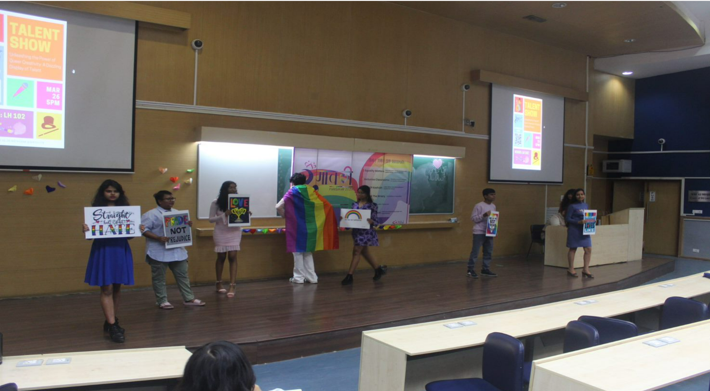
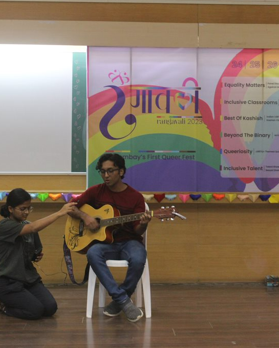
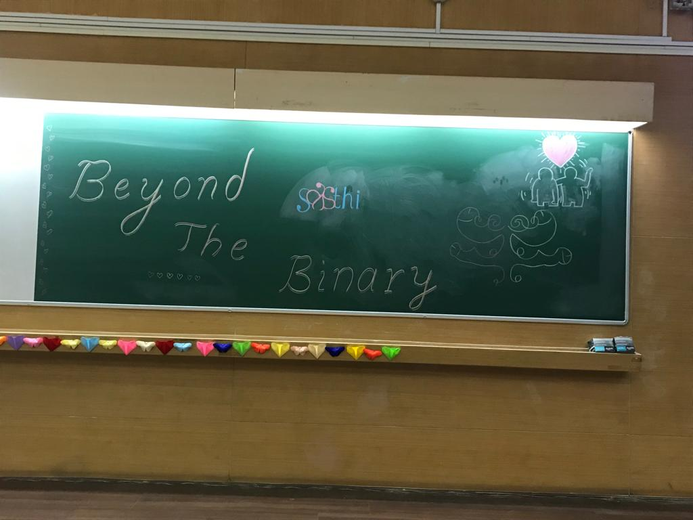
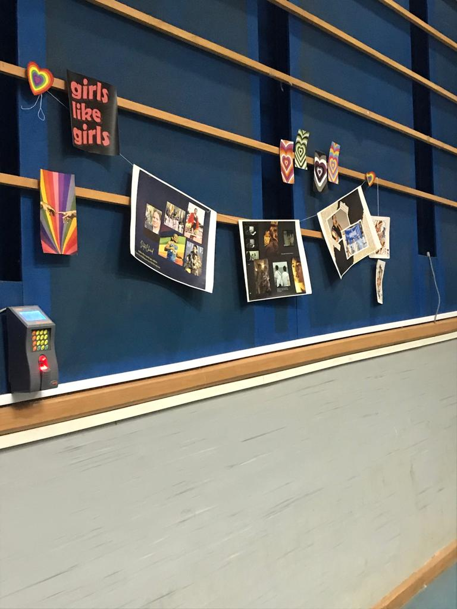

Rangavali, the first ever queer fest of IIT-B, was held on the 25th and 26th of March. Conducted by Saathi, the LGBTQ+ resource group of IIT Bombay, this marks a welcome change for students wanting an inclusive platform to express their identity and talents without fear of being judged. Creating a safe space for everyone, the event invited students of campus along with people externally to come together to come together and spend time learning about queer identities, participating in fun activities and socialising. The total footfall for the event was around 200 for all the events which created a very friendly and warm environment throughout the fest. “Saathi has come a long way from struggling to conduct just one Pride march in 2019 to now having an entire weekend fest. I think it is a very big leap and going forward this is just going to grow. As this fest happened for the first time, maybe it wasn’t as big as we wanted it to be but it definitely delivered. I am sure in the coming years it will become bigger and better and more colourful,” said Khushi, the Overall Coordinator of Saathi.
Day 0 of the fest took off with the Best of Kashish Film Festival, where multiple Indian short films on the LGBTQ+ community were screened in association with Kashish, a queer film festival collective based in Mumbai. Films that were screened included Third, based on the plights of transgender people suffering largely due to the prevailing prejudices in society, and also from the clashes within the trans community; Partner, a film about a gay man coming out to his mother; The Caress, about a middle aged transman crossing paths with an old lover; Man and Wife, about a man coming out to his would-be bride on their wedding night; and Chhoti Shameez, a film about a motley group of women who forge friendships amidst the backdrop of a bra shop. A talk was also delivered by Sridhar Rangayan, founder and festival director of Kashish and a filmmaker who has delivered renowned queer films. Each film, in its own unique way, added colour to the evening and broadened the audience's perspectives on what it means to be a member of the queer community.
“A film that stood out for me was Chhoti Shameez by Shruti Vohra. The film explores how a group of women face difficulty in buying bras at a local bra store which is run by a self- righteous middle-aged man. One day, the chance to run the shop is provided to Rani, a trans woman looking to do that work for a while. Rani takes the customers' needs and desires into account and makes the store into a more open, accepting space. At the end, the entire group comes together in song and dance and a feeling of festivity and celebration engulfs the moment. The film showed how capable independent women are in running an enterprise on their own and that it's high time society provides them the freedom to decide what's best for them. Lastly, it reinforced my belief in how a community can collectively achieve great things and in their own small way, bring about big social change.” - Ayush, a sophomore.
Day 1 commenced with the inaugural ceremony. This was followed by a Workshop on Inclusive Classrooms for Teachers and Researchers, conducted by 6 Degrees Diversity Counsel, an organisation that assists in inclusive marketing and recruitment, in collaboration with the Gender Cell. The workshop aimed to prepare teachers to acknowledge diversity across various cross-sections of gender, sexuality, identity, ethnicity. It served as a problem solving session for professors, who shared issues they encounter in classrooms, and were, then, provided with solutions by the panel.
Thereafter, Chayanika Shah, a renowned queer feminist activist and a distinguished alumna of IIT Bombay delivered an enlightening talk titled "Making Space for All Identities: The Continuing Conversations". She shared her experiences as a student in the 1980s and how she faced sexism in various forms at the campus. One of the the prominent student protests she led was to change the name of the 'Ladies Hostel' to Hostel 10 because the old name only referred to them as women, and not as students. She also talked about how the living and academic spaces in the institution are built to exclude women and keep them under surveillance. Quoting her, “Surveillance is what puts those that are different into limelight.” This leads to a sense of separation from the larger student community. Chayanika also talked about how gender-based separation reinforces the idea that heterosexuality is the norm. She also spoke about class and caste discrimination and the idea of merit being a result of privilege; “We must recognise that merit is always socially located, and that using the language of merit is never going to explain well enough the individual achievements of people coming from very different backgrounds.” She then shared her personal experiences as a queer person in academia. The talk ended with a Q/A session, wherein she answered the audience’s questions.
Next after this, Atelier: Talking Policy through Cinema was held by the Ashank Desai Centre of Policy Studies. This was a film policy workshop wherein various policy aspects of social inclusion, gender, ageing, etc were discussed with regards to the art of filmmaking. A film, Joyland, directed by Saim Sadiq, based on trans issues, was also screened during the workshop.
The Art exhibition-cum-competition was a great exercise in community. Everyone was socializing and befriending each other amidst the strokes of paint brushes. An hour into the competition, when everyone was finished, all their works were displayed on the tables of the room and voted upon by the other participants. There were around 30-40 people in total who came from within campus as well as outside. “Felt like it was a very inclusive event, met some people, had a lot of fun” - quote from a participant of the event from outside the campus.
Afterwards, there was a fun and educative Quiz, conducted in collaboration with Literati. About 40-50 participants were excited answering questions that explored queer themes, covering a range of topics from movies and books to Greek mythology. The diversity of the questions reflected the breadth and depth of queer culture; trivia about the pride flag, Dorothy being a gay icon, Dr. Strangelove, Sheldon, and more surprised and delighted alike.
Day 2 began with an extremely thought provoking Panel Discussion. The panel consisted of Gourab Ghosh, an assistant professor of Literature and Cultural Studies at Jyoti Dalal School of Liberal Arts (SVKM's NMIMS University) and queer rights activist; Zainab Patel, an inclusion catalyst and social entrepreneur; Umang Sheth, founder of Gay Bombay and the Hugging Club of India, and co-founder of Mr and Mr (a gay matchmaking initiative) and Rumi Sharma, a TedX speaker and human rights activist. The panel discussed how reforms like legalising same-sex marriage and adoption rights for gender and sexual minority couples will not only benefit the community per se, but also help to create a liberal and progressive image of our nation in the world. The government’s stance on the concept of an ‘Indian family unit’ and of same-sex individuals living together as partners not being comparable to the same was challenged and the need for more inclusive laws was discussed. The event saw an audience of about 40 people. “We want awareness and we want to remove stigma because there is so much self-stigma that it gives rise to. The feeling of ‘something is wrong with me, I am inferior, not good enough’. We need workshops and events like this to empower people and create awareness,” said Umang Sheth, highlighting the importance of the discussion.
The Talent Show marked the end of the fest. This event featured some very heart-touching performances that included story-telling, poetry, and music. Ranging from a story of a friend who fell for his best friend, creating awkwardness in the relationship to poetic reflections on nature and its symbolism for love. Some performers shared their experiences of self acceptance through fittingly worded lyrics strung together melodically. The highlight of the show was a rampwalk by a group of students, advocating for equal rights and greater freedom for queer people. “We started off with very few participants. Not many people registered for the event. However, seeing the enthusiasm and participation in yesterday’s events, we had better hopes and I think we did great. We had more participants than we expected. It was a good event for us and most importantly we enjoyed it!” said Sashwat, a second year MTech student at Centre for Technology Alternatives for Rural Areas, involved in the organisation of the event.
Nikhil, a Saathi convener, articulated the essence of the event perfectly: “All in all, this fest was an advance and an attempt in making the institute more inclusive and instilling a sense of belongingness among the people of the queer community on campus. This was Saathi’s first major fest. It will be a legacy event in the coming years and the team wants it to get more vibrant, colourful and grand year-by-year. In addition to the creation of the sense of community, the event also hopes to create awareness about LGBTQIA+ identity on campus.”
“After attending the queer fests conducted by IIT Delhi and IIT Madras, we really wanted to conduct such an event on our campus. This was how the idea came into being. The fest was organised entirely by students. We got incredible help from the faculty and IITB administration. This was the first edition of queer fest on IITB campus. It was a dream for so many of our alumni. It is because of Saathi’s legacy that we were able to have this event on our campus. Our vision is also to have a Dean of Diversity and Inclusion in IITB. IIT Delhi also has this position and we believe our institute can benefit from it greatly and help people from across the spectrum to feel safe and inclusive on the campus,” said Vishwanath, the Overall Coordinator of Saathi and Rangavali.
   